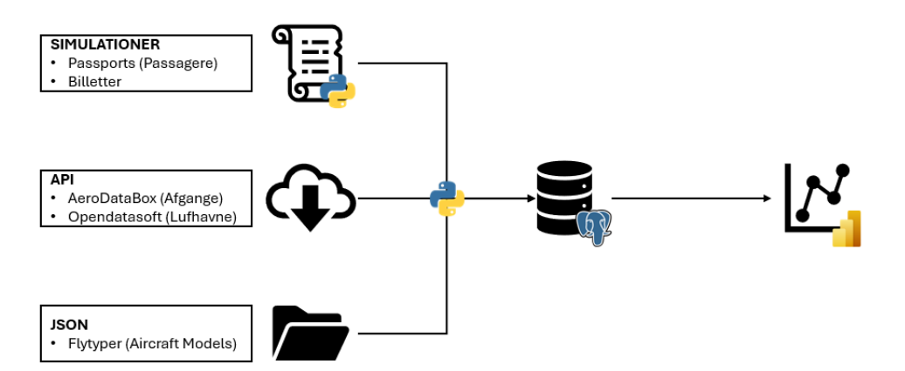

Et modulært flow fra kilder til analyseklare tabeller.
AIRPORT er delt op i services for simulation, ingestion og tabeloprettelse, så løsningen kan køres igen og holdes struktureret på tværs af datakilder.

ETL-diagram
Simulation, API, JSON, PostgreSQL og Power BI.

Rapportklart output
Tabeller og views klar til semantisk model.
Highlights
Tre inputtyper
Simulationer, API-data og JSON-referencefiler.
Fire jobs
API, JSON, SQL-oprettelse og simulation.
Genkørbar struktur
Runtime-definitioner og Docker isolerer hvert trin.